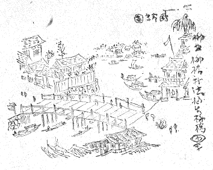
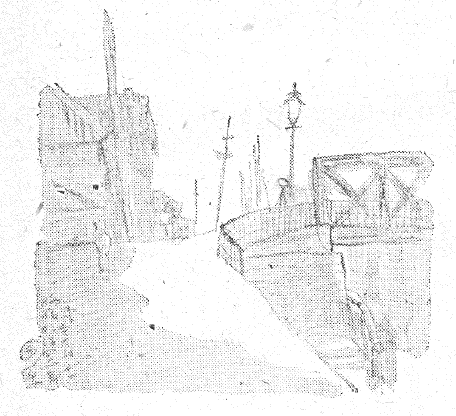
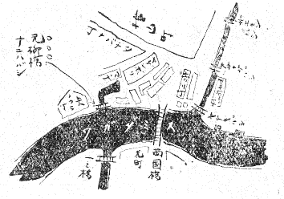

| 柳橋考 | |
| 木村 荘八 | |
| (2012) | |
柳橋考
木村荘八
角力の頃になると両国界隈がトピックになるやうである。両国界隈の風致景物の中でも柳橋などは特に角力の頃でなくとも話題になつたものだつた。今では反対に角力の国技館は周知されてゐても、柳橋なんぞの存在は年中殆ど忘れられてゐることの方が多いかも知れない。
柳橋は今も昔の通り神田川筋の「......東の大川口にかゝるを柳橋と号く。柳原堤の末にある故に名とすとぞ」、かう「江戸名所図会」に説明してある、その儘の昔の位置にかゝつてゐるけれども、今見る橋はきやしやな柳橋の名にそぐはない重たい頑丈一方のものになつてゐる。これは震災後、一列一体に東京市内の橋が構造本位のがつしりしたものになつた、その時矢張り同じ方式で、改装されたものである。
現在の橋に変る前の柳橋も、とうに木橋ではなかつた。しかしどこかのんびりとした明治の味のする吊橋風の――有体にいへば貧弱な鉄骨の橋――たゞ少くも重たい邪険な感じはしなかつたから、どうやら「やなぎばし」らしいものだつた。勿論、元々の柳橋は木の橋である。（井上安治の写した図で見ると、元の木橋時代の姿は極く簡素に欄干の小間が斜にぶつちがひの太い木組で出来てゐる。）

Ⅸ江戸の柳橋
井上安治も柳橋の図はその木橋の姿と、それから架け替へになつた文明開化の鉄橋ぶりと、二つ描いてゐる。――安治には第二の鉄の柳橋は珍らしかつたわけだらう――しかしわれわれには、柳橋は開化の鉄橋姿で初めから見参したので、今から思へばそれが懐かしいものになつてゐる。
余談に渉るが「さういふこともあるかなア」と人に思はす程度の、話材を示す意味で、仕事に関する柳橋のことを一寸こゝに述べて見よう。それはかれこれ小十年前になるが、ぼくはある新聞で、田中貢太郎氏の小説「情鬼」の插絵を受持つたことがあつた。そのある一図に、作中人物が柳橋を渡るところがあつたのであるが、ぼくは何の気なしに幼少熟知する鉄の柳橋を絵に描いて――ふと、心ついたのは、その小説の年代
のことである。田中氏の小説で柳橋を渡る人は大隈重信であつた。
その時大隈さんの渡るべき柳橋は鉄橋だつたらうか、木だつたらうかといふ疑問がふと心にわいたのだ――しかも橋をどつちみち絵に描くぼくの立場としては、これが曖昧では、全く手が出せない。
で調べた、調べた。絵を描くよりもこの調査の方に手間を食つて、絵は締切を控へる忙しいさなか、やきもきしたものだつたが、その調べた結果は、なんと、
○大隈さんが隻脚になつたのは明治二十一年十月十八日である。
○柳橋が昔の木橋から鉄に架け替へられたのは明治二十年七月、と橋の銘に記される。――そして、この小説の中の大隈さんは、まだ隻脚となつてゐない時代である。脚の丈夫な大隈さんは、木の柳橋を渡つてもよければ、また鉄橋の方も渡れたわけである。

Ⅸ木下杢太郎写柳橋
たゞ鉄橋を渡すと、それはある年の七月から翌十月までの限定された十六ヶ月間の出来事
、と、ぴつたりと範囲のきまる、窮屈な、際どいことになるのだつた。
ぼくは苦笑と興味の禁じ難いものをひとり味ひながら、絵は無難の方を選んで、木の柳橋を渡るところに描き替へたのだつた。
木の柳橋もさうさう古いまゝのものではなく、明治になつてからの架け替へである事は常識として、明治初年のこの橋には、刺戟的な歴史の插話が伝へられてゐる。彰義隊の乱の起つた時に、この柳橋は油を灌いで焼かれようとしたといふのである。しかし焼落ちずに暫時焼残りの危ふいまゝで、架つてゐた期間があるといふ。
これはいつの時代にも神田川筋の、地の利の自然で、さういふ羽目になるわけだらう。ぼくの知つているのでは明治三十八年の焼打騒動の時に、柳橋は矢張り、並ぶ浅草橋と一緒に、火をかけて落さうとされて、落ちなかつた。
彰義隊の揚合には、この橋が落ちるとどうなるのだらう。また、焼打の揚合にはどうなるのだつたらうか。漠然とその状態の想像は出来ても、当事者達の作戦的な計算はぼくにはわからない。
柳橋といふからには柳樹に縁がありさうなもの、その橋のたもとに、見るからにその名を名乗つて出さうな古木でもありさうであるが、とんとそんなものはなく、前にいつた「柳原堤の末にある故に名とすとぞ」これだけがその優しい名のたつた一つのいはれで、この辺の土地一体「柳」の字といへば、それは何れも柳原の柳から来てゐるといふことである。柳原封疆
には古くから半ば公式に柳樹が植つてゐたのである。そして柳樹に限つたものである。
といふのが、柳は卑近に幽霊なんぞとわれわれ連想しやすいところから、陰気なものと思ふと、これが反対に、大の陽樹ださうで、柳原封疆の見当といふものが、江戸城から見ると、凶位に相当したといふことだ。そこで特に陽樹の柳を選んで植ゑたのが、この柳原の起りだといふ。
だから「柳原」こそは由緒正しいものゝ、柳橋はたゞその大柳原の末にあるといふだけの、ほんの伴食の「柳」の意味に過ぎない。
――とはいへ、この橋は、瘦せても枯れても江戸から東京へかけて、この良い響きなり匂ひの名をもつ名橋はこの一本の他には無く、柳橋から小舟で急がせ山谷堀......と幕末の唄にいふイキなやなぎばし
の沽券は、末始終こゝだけのことである。（僕が子供の時分には柳橋の下には、いつも屋根船が二三杯もやつてあつた。）
ところが大川端にはもう一本「元柳橋」といふ橋があつて、比較的近世までのこり、それはわかり易くいへば、大川端へ行くと川中に船料理の浮んでゐた個所がある。ざつとあの辺にあつたと考へればよく、小さいながらこの橋を渡らないことには、大川端はまつすぐ突つ切れなかつた地形で、明治三十三年版の東陽堂の「新撰東京名所図会」に「現在の橋梁は木橋にして長さ五間、明治二十年一月成と刻しぬ」と誌してある。文字で説明するよりも図で描く方が早いから、明治二十九年の東京全図を関係の区域だけこゝに略写しておくことゝしよう。

Ⅸ薬研堀
以前はこの大川端に、川から町中へとぶつちがひに薬研堀といふ堀割が浸入してゐた。「江戸図説、府内備考」等によるに、「昔時は矢の倉の運漕堀にして横山町に通じその状薬研に似たるを以つて薬研堀と称すと。」（日本橋繁昌記）
その横山町までも届いてゐたといふ奥の方はとうに埋立てられ（明和八年）、更に埋立てられ埋立てられして、近世の薬研堀はほんの僅か川から矢の倉へ食込んでいる残体に過ぎなかつた。――それでも兎に角この堀に橋が、元柳橋がかゝつてゐたのである。
矢の倉は八の倉の転訛だといふことであるが、米沢町といふ町名といひ、昔その辺へ深く鍵の手に浸入した薬研堀の用途は、そこに御米倉が立並んだので、大川筋からこれへ船を入れるための、最も現役性に富んだものだつたわけである。
で、そこに古くから架る元柳橋は、難波橋と呼ばれてゐたものが、いつか元柳橋となつた。薬研堀にかゝる橋は昔はこの一橋に止まらず、尼が橋といふものもあつて「乞食の尼此の橋詰に居て往来の人に憐を乞ひし故」そんなのもあつたと記されるが、これは明和の埋立にすでに消滅して、明治時代まで残つたのは、元柳橋一つである。
しかもこの橋のたもとには柳の大樹がある
。一方の柳橋には古くは広重、中頃は清親、安治、近くは「新撰東京名所図会」の山本松谷の写生図を徴するも、それらしい柳樹の縁は全然一度も無いのに、元柳橋の方を見ると、清親の名所絵に出て来るこの橋は、凄いばかり髪ふり乱した橋畔の柳の大樹を通して、夕靄の彼方遠くに両国橋を望むところが写してある。
又山村清助、画名国利なる人の「木版絵本」（明治十四年一月二十八日御届とある）には、珍らしく、本所側から浜町大川端一帯を見渡した景色が描いてあつて、川岸の頃合ひの所に大きな柳が見える。川向うからこれ程大きく見えたかと思ふ大柳があつて、そのすぐかゝりに存外小さな橋が描いてある。いふまでもなく元柳橋遠望の図に相当する。
明治二十三年四月の版の「東京地理沿革誌」に、「米沢町は三町あり。元祿の頃までは矢の倉といへる米倉の地なり。故にこの名ありとぞ。町内より矢の倉町に渡る橋を元柳橋といひ、又この辺の河岸通りをも元柳橋と呼ぶ。」
かういふ叙述があるが（山口県士族村田峰次郎氏文）、これは沿革誌として相当古い文献になるから、後の東京市で編輯した公文書あたりにもこの記事は尊重されてゐるのと、「又この辺の河岸通りをも元柳橋と呼ぶ」さうはつきりと書いてあるのが、決して誤聞や誤記を誌したとは思へぬ節があつた。これがかういふ地誌には軽からぬ性質となるもので、恐らく巷説は、たしかにあの辺の土地をさういひならした習慣もあつたものだらう。
つい口づての不用意なそんなところから、剰さへ名実そのまゝ橋のたもとに柳樹の在ることといひ、元柳橋の「元」の字の意味の手つ取り早い解釈も手伝ひ旁々、一時「柳橋」は本末顚倒して、大川端の元柳橋が元の、そもそもの、柳橋。神田川の大川口にかゝる柳橋は「新柳橋」であると、恰も人でいへば無実の罪にもおちんばかり、証拠も弁論も相手方に全然有利で、本ものゝ柳橋は却つてその名の権利や理由の正当さをいひ解く術の無い、そんな情勢を惹起したことがあつたのである。
それにしても一体、何故
、難波橋を元柳橋とは云ふのだらう？
享保十三年（西一七二八年）の八月に、両国橋は出水で流されたことがあつた。それで普請をして仮橋が出来、本橋は引続き普請中、寛保二年（西一七四二年）にまた流されてしまつた。やつと本普請が出来て仮橋を取払つたのが延享元年（西一七四四年）五月のことである。
この間、仮橋の両国に人の親しむこと十六年の久しきにわたつたので、本橋が出来上つてからも、却つてそれまで仮橋のあつた位置の方を人は呼んで元両国といつた。（ぼくが子供の頃には、まだこの辺を元両国と呼ぶ年寄りが沢山ゐた。）
この元両国に難波橋があつたのであるが――「夫婦柳、なにはのはしの詰にあり、来歴しれず。」（江戸砂子）
「夫婦柳、両国の南川はた通り、難波橋の北の方に、左右に二本、いにしへより在。近きころ一本枯たりしが、根より芽生へ出で、元の如く並び立てり。米沢町と鈴木氏御屋敷との間也。」（総鹿子）
難波橋の橋の傍らの柳についてはこれ程文献に著聞する限り、橋の名もこれにかけて柳橋と呼ばれようことは容易くうなづける。元両国の地にある柳橋、それが
「元柳橋
」の名の起りである
。
しかし同時にそれが「元からの柳橋」といふ混同を来す理由にもなつたのは、混同を来さない方が寧ろをかしいくらゐ、この舌ッ足らずの橋名が重々悪いためである。
難波橋がいつ頃から
転じて元柳橋となつたか。――その経緯は遺憾ながらはつきりしない。
【註】これは既存の文献についていつたのだが、僕が柳橋の近くにゐたころはまだコドモだつたので掲ぐべき写生画とて無いが、木下杢太郎（太田医博）の写したものに、明治四十一年代の柳橋が一枚ある。これにもひよろ長いガス燈や電信柱はあれど、柳は無い。杢太郎の写生画は同氏の学生時代であらう。
底本：「東京の風俗」冨山房百科文庫、冨山房
１９７８（昭和53
）年3
月29
日第1
刷発行
１９８９（平成元）年8
月12
日第2
刷発行
底本の親本：「東京の風俗」毎日新聞社
１９４９（昭和24
）年2
月20
日発行
※底本は、物を数える際や地名などに用いる「ヶ」（区点番号5-86）を、大振りにつくっています。
※図版は、底本の親本からとりました。
入力：門田裕志
校正：伊藤時也
２００９年1
月6
日作成
２０１２年5
月16
日修正
青空文庫作成ファイル：
このファイルは、インターネットの図書館、青空文庫（http://www.aozora.gr.jp/）で作られました。入力、校正、制作にあたったのは、ボランティアの皆さんです。